Vision
What does it mean, to see?
Vision is the process of discovering what is present in the world, and where it is.
Vision is a process that produces from images of the external world a description that is useful to the viewer and not cluttered with irrelevant information.
Vision is often incorrectly compared to the operation of a camera. A camera simply reproduces point-by-point the light intensities in one plane of the visual
field. The visual system, in contrast, does something fundamentally different. It
interprets the scene and parses it into distinct components, separating foreground
from background.
Traditionally, a visual scene is analyzed at three levels: low, intermediate and high.
- At the lowest level, visual attributes such as local contrast, orientation, color, depth and motion are processed.
- At an intermediate level, Low-level features are used to parse the visual scene. Local orientation is integrated into global contours; local visual features are assembled into surfaces, objects are segregated from background, surface shape is identified from depth, shading and kinematic cues.
- The highest level concerns object recognition.
Visual processing is mediated by the retino-geniculo-striate pathway 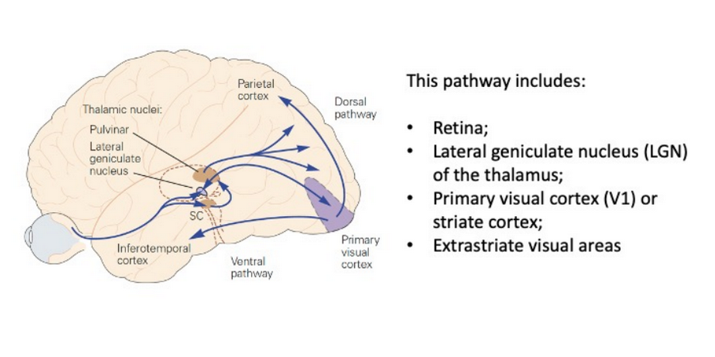
Visual field
Is the area that can be seen as you fixate your eyes on a central point
Eyes split
The retina of each eye can be divided into two part: left and right.
The left hemiretinas (temporal of the left eye, and nasal of the right eye) see the right (opposite) visual hemifield.
The right hemiretinas (nasal of the left eye, and temporal of the right eye) see the left (opposite) visual hemifield.
Because the temporal hemiretina of one eye sees the same visual hemifield as the nasal hemiretina of the other eye, partial decussation of the optic nerve fibers at the chasm
ensures that all information related to each hemifield is processed in the visual cortex of the contralateral hemisphere.
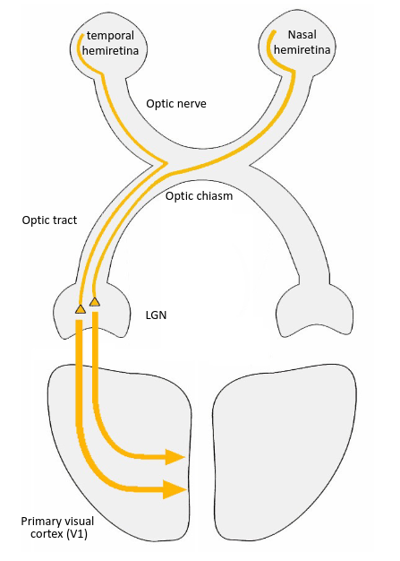
In primates, LGN is a layered structure consisting of six layers, of which two Magnocellular layers (layers 1 and 2), and four Parvocellular layers (layers 3 to
6). Each layer receives input from either the ipsilateral eye (temporal hemiretina, layers 2, 3, 5) or the contralateral eye (nasal hemiretina, layers 1, 4, 6)
Receptive field
Visual neurons respond to stimuli in only a limited region of space. This region of space is referred to as that cell’s receptive field (RF).
Eccentricity
The receptive fields of the retinal ganglion cells that monitor portions of the fovea subtend about 0.1° (equal to 6 min of arc), while those in the visual periphery reach up to 1° of visual angle or more.
Cortical magnification
The amount of cortical area devoted to each degree of the visual field, known as the
magnification factor, varies with eccentricity.
Area V1
Types of receptors
Humans, like most vertebrates, possess two types of photoreceptors, rods and cones, differing in shape, function, connectivity and distribution in the retina.
- Rods (100 million) are mainly for night (or scotopic) vision. They can signal the absorption of 1 single photon; their response saturated in daylight, and they cease to respond to variation of intensity
- Cones (5 million) are only for daytime (or photopic) vision. They are much less sensitive to light, make no contribution to night vision, but have higher spatial and temporal resolution (their response is considerably faster than that of rods)
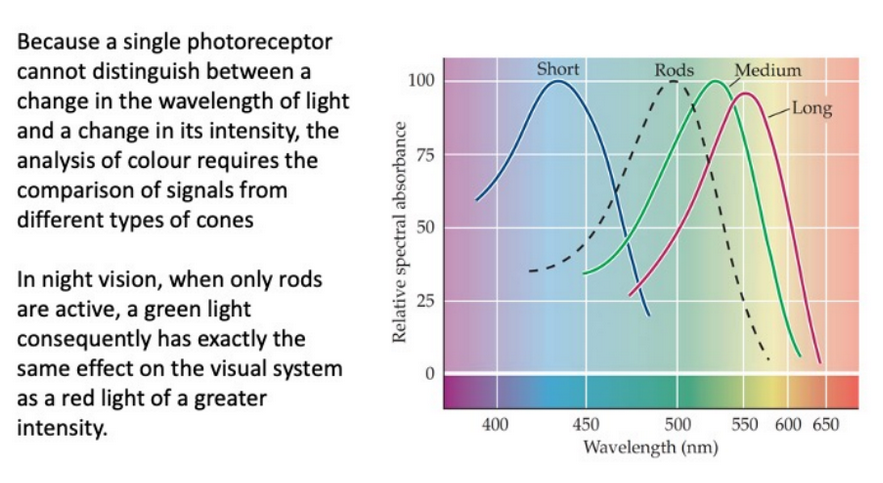
RGCs respond only weakly to uniform stimulation. RGC mainly emphasize the contrasts of brightness.
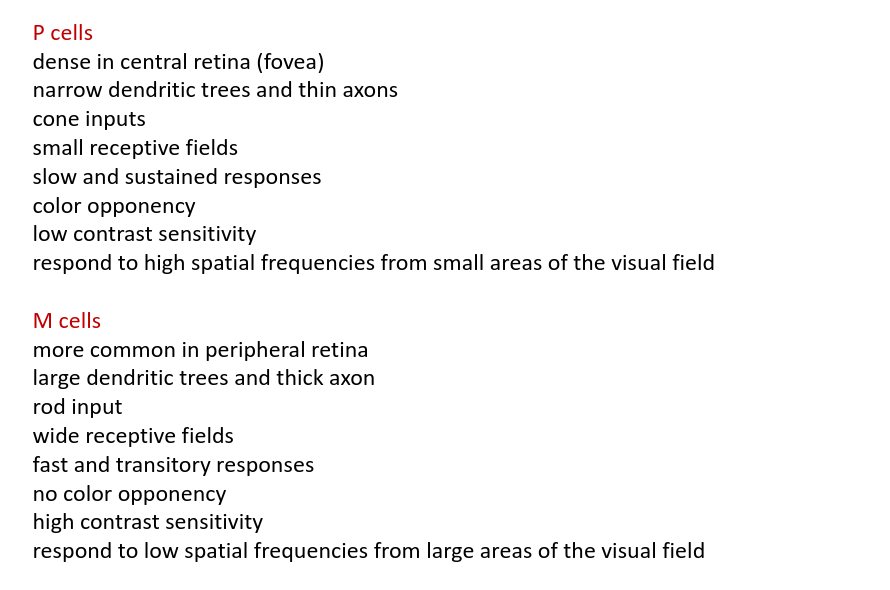
RGCs have concentric circular receptive fields and falls into two categories:
- ON-center: respond to light in the center of the receptive field
- OFF-center: respond to dark in the center of the receptive field
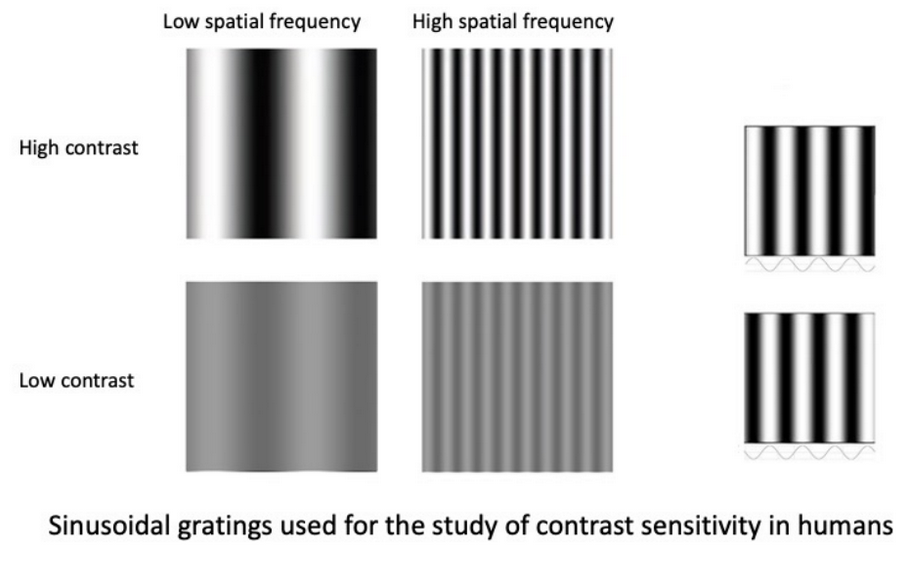
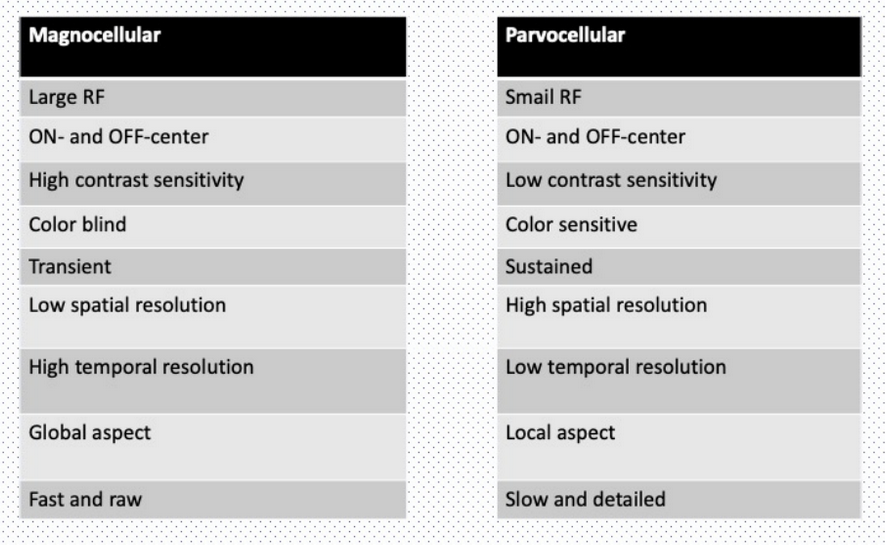
Neurons in area V1 are classically divided into two types: simple and complex. Each neuron responds better to a different orientation. Simple cells respond well to sinusoidal gratings (Gabor patches) of specific spatial frequencies and phases. Complex cells have rectangular big receptive fields, respond to specific orientation and linear stimuli, the position of the stimuli is non-critical, the movement of the stimuli is very effective but only in selective directions. Complex cells are less selective for the position of the stimulus in the receptive field The receptive field has no defined ON and OFF regions and responds similarly to light (on a dark background) or dark (on a light background) stimuli in all positions of the receptive field. They are activated as a linear oriented stimulus crosses their receptive fields in one direction.
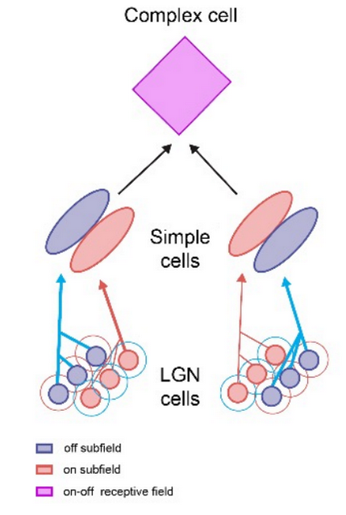
According to the hierarchical model (Hubel and Wiesel, 1962), simple cell receptive fields are constructed from the convergence of geniculate inputs with receptive fields aligned in the visual space. In turn, complex receptive fields arise from the convergence of simple cells with similar orientation preferences.
V1 neurons are also selective for:
- orientation
- spatial frequency
- direction
- temporal frequency
- disparity
- color
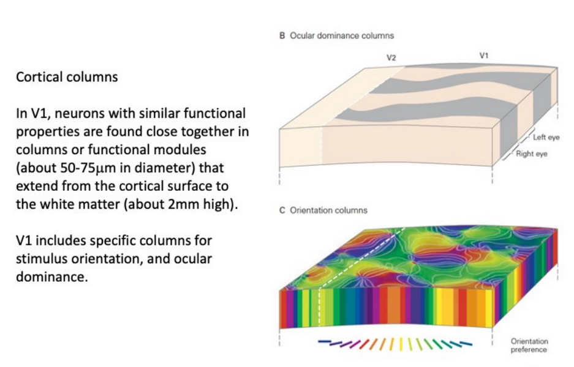
Neurons with the same orientation preference are grouped together in columns. Each column has a few hundreds of cells each. Moving from a column to the next one, the orientation change of 10–15 degrees. A set of columns that corresponds to a complete sequence of orientation is called hypercolumn.
Ocular dominance columns
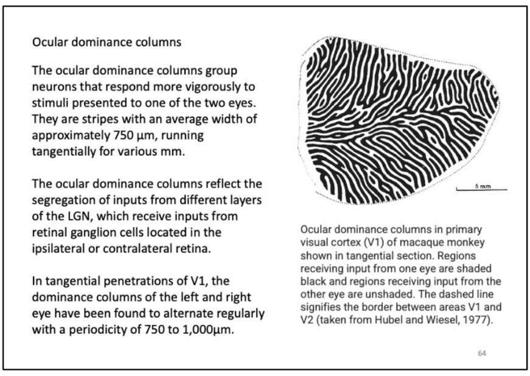
Both the orientation and ocular dominance columns have blobs of neurons that are poorly selective for orientation but good for color detection.
Area V2
In this area, thick and thin dark strips separated by pale stripes are evident with cytochrome oxidase labeling.
- The thick stripes contain neurons selective for direction of movement and binocualr disparity
- The thin stripes contain cells specialized for color
- The pale stripes contain orientation selective neurons
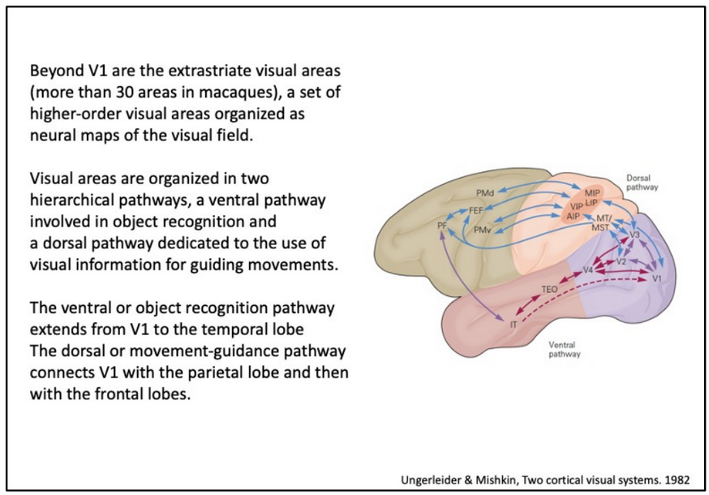
The dorsal and ventral pathways are highly interconnected so that information is shared.
3D vision
It is based on:
- monocular elements:
- familiarity with the object
- interposition
- linear perspective
- size of objects
- distribution of shadow and lighting
- parallax movement
- stereoscopic elements
binocular disparity
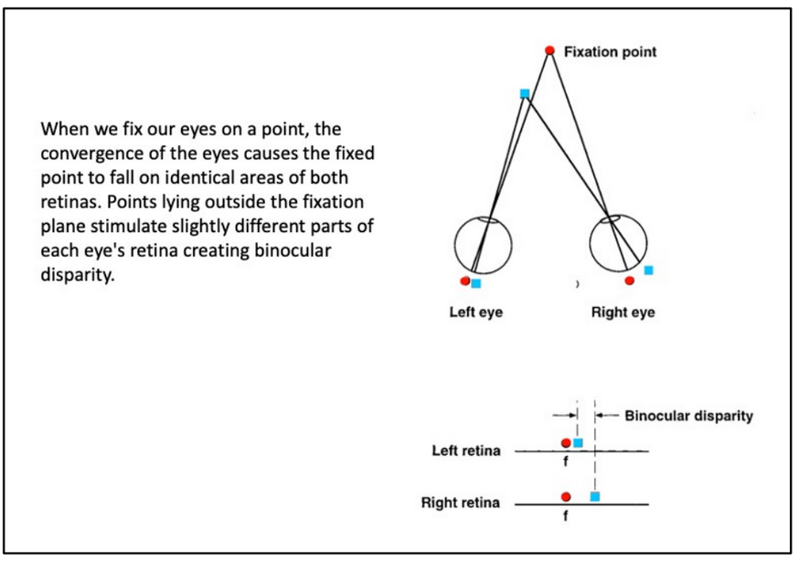
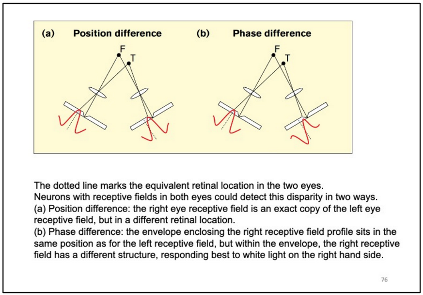
Visual motion
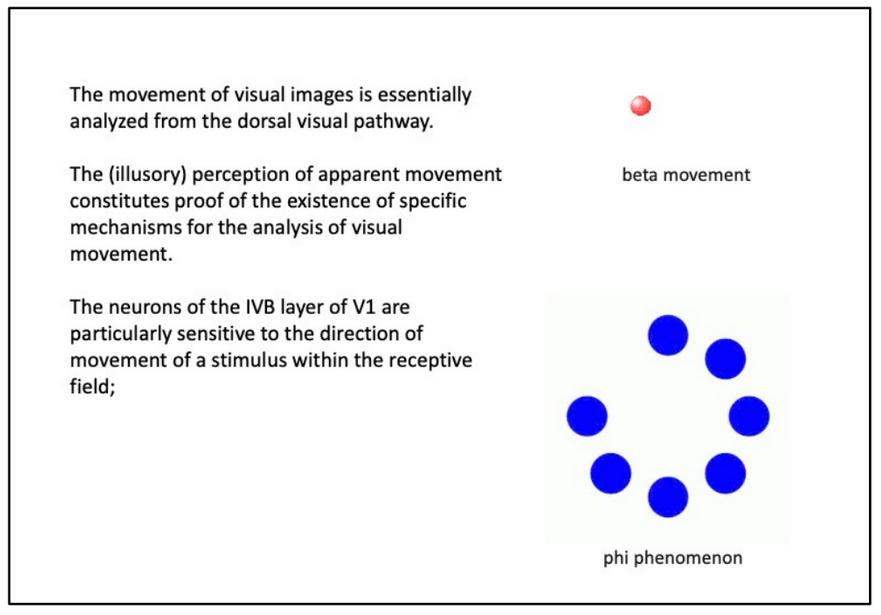
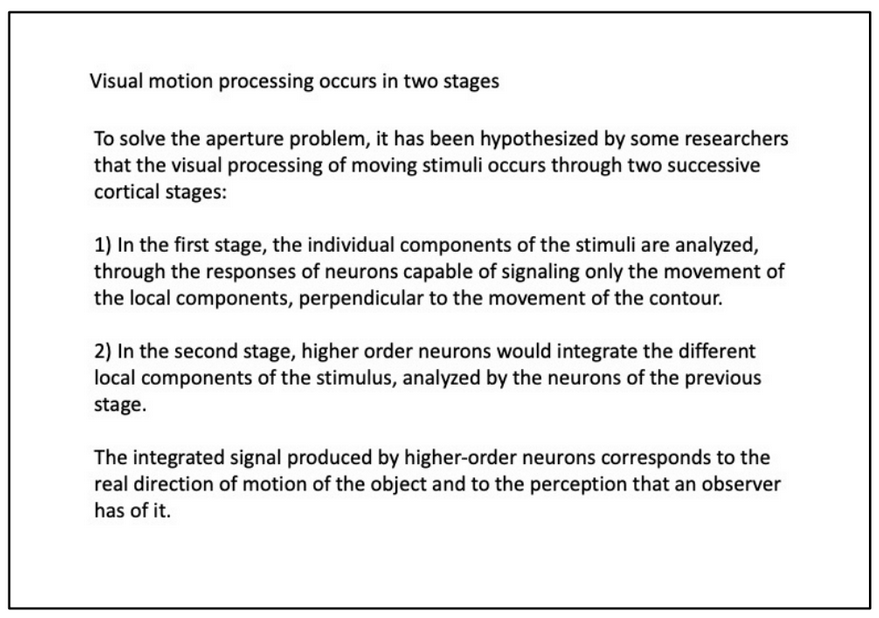
Areas
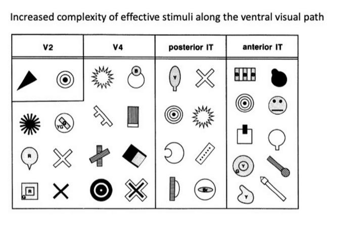
The neurons that respond to the different parts of an object are not randomly arranged in the IT area. Neurons that respond to same elements are grouped in a cortical column, analogous to the orientation columns found in V1. Contiguous columns encode elements related to each other.
Studies by Tanaka have shown that IT neurons that seem selective for a specific object, actually respond to a part or component of the object, and not to the object as a whole. These parts of objects that activate neurons can be found in a variety of different stimuli, and constitute a sort of visual alphabet for the recognition of objects.
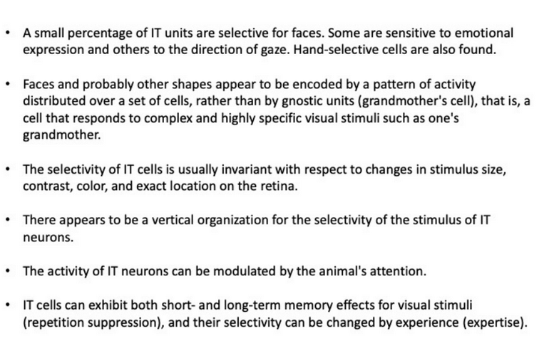